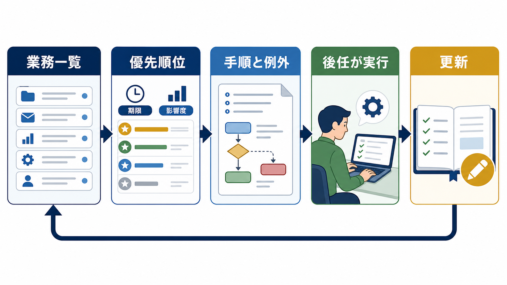

OPERATIONS / HANDOVER
業務引き継ぎの方法｜後任が迷わないマニュアルの作り方
業務引き継ぎは、説明会を開くだけでは完了しません。業務の一覧、期限、判断基準、未完了タスク、関係者を整理し、後任が実際に動いたときの質問まで資料へ戻します。

業務引き継ぎは、担当者の記憶を一覧にする
最初から文章を書かず、担当している業務を洗い出します。定例業務、随時対応、顧客・取引先との関係、利用システム、期限、未完了案件を列に分けます。本人しか知らない業務を見つけるには、カレンダー、メール、タスク、共有フォルダも確認します。
| 項目 | 書く内容 | 確認する資料 |
|---|---|---|
| 業務名 | 何を完了させる仕事か | 予定表・タスク |
| 頻度と期限 | 毎日・毎月・発生時、締切 | カレンダー・規程 |
| 関係者 | 社内外の担当・承認者 | 連絡先・案件履歴 |
| 状態 | 未着手・進行中・完了 | 案件管理・メール |
優先順位は、期限と止まった場合の影響で決める
引き継ぎ期間が限られるときは、全業務を同じ深さで説明しません。締切が近い、止まると顧客や社内の次工程に影響する、判断に資格や権限が必要、代替担当がいない業務から先に扱います。重要度が低い定型作業は、資料を先に渡して質問方式にします。
期限
次に締切が来る業務を確認する。
影響
停止した場合の顧客・社内影響。
担当
代替担当と承認者を決める。
手順だけでなく、判断基準と例外を書く
引き継ぎ資料が役に立たない理由は、操作の説明はあるのに、判断の根拠がないことです。「この条件なら進める」「この場合は止める」「迷ったら誰に相談する」を書きます。顧客ごとの慣習や過去の経緯は、事実と推測を分けて残します。
- 開始条件：どの情報がそろえば始めるか。
- 通常手順：何をどの順に処理するか。
- 確認基準：何ができたら完了か。
- 例外：通常と違う場合の判断と相談先。
- 証跡：どこへ記録し、誰が確認したか。
メモや録音から手順の下書きを作るときは、AIを整理の補助に使えます。ただし、顧客情報や機密情報の入力は生成AIの社内利用ルールと照合し、出力内容は元担当者が確定します。
後任が実際に実行して、説明漏れを見つける
引き継ぎの確認は、前任者が説明できたかではなく、後任が一人で業務を進められたかで行います。前任者はすぐに口を出さず、後任が質問した場所、資料を探した場所、判断に迷った条件を記録します。その記録を手順とFAQへ戻します。
| 確認段階 | 後任がすること | 前任者が見ること |
|---|---|---|
| 準備 | 資料・権限・連絡先を確認 | 不足する前提がないか |
| 実行 | 通常案件を一人で処理 | 判断と記録が合っているか |
| 例外 | 想定ケースを説明する | 停止条件と相談先が分かるか |
| 完了 | 次回の予定と残課題を確認 | 未完了タスクが残っていないか |
引き継ぎ後の質問をマニュアルへ戻す
引き継ぎが終わった後に出る質問は、資料の改善点です。質問と回答を社内FAQへ追加し、手順の不足なら業務マニュアルを更新します。更新者、版、変更日、変更理由を残して、前任者の個人メモだけに情報を置かないことが大切です。
引き継ぎ資料の公開前チェック
後任へ渡す前に、業務が一覧から実行までつながっているかを確認します。次の項目が欠けている業務は、前任者の説明が必要なままです。
- 業務の目的、期限、担当、承認者が書かれているか
- 開始条件、通常手順、完了条件が分かるか
- 例外と停止条件、相談先が書かれているか
- 未完了案件、次回予定、顧客との約束が残っているか
- 利用システム、権限、保管場所が確認できるか
- 後任が実行した結果と質問を反映したか
- 中小企業大学校「業務マニュアルの作り方・活かし方」（2026-07-13確認）
- J-Net21「店舗マニュアル作成のポイント」（2026-07-13確認）
- IPA「AIの利活用、AIによるDXの推進」（2026-07-13確認）
よくある質問
引き継ぎ資料はどのくらい詳しく書けばよいですか？
後任が通常業務を一人で実行でき、例外時にどこへ相談するか分かる深さが目安です。操作の全てを長く書くより、判断基準、期限、関係者、未完了タスクを優先します。
引き継ぎ期間がない場合はどうしますか？
業務一覧と期限、顧客への約束、未完了案件、権限、連絡先を先に共有します。次に影響が大きい業務だけを実行確認し、残りは質問ログで優先順位を付けます。
前任者のノウハウをAIで整理できますか？
整理や抜けの候補出しには使えます。ただし、元資料の権限と個人情報を確認し、AIが補った内容を事実として扱わないことが重要です。公開版は担当者が確認します。